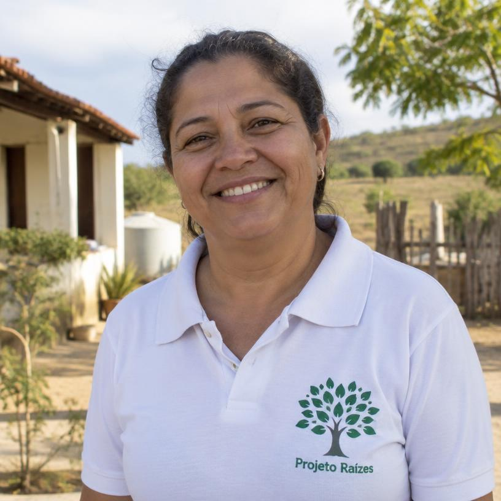
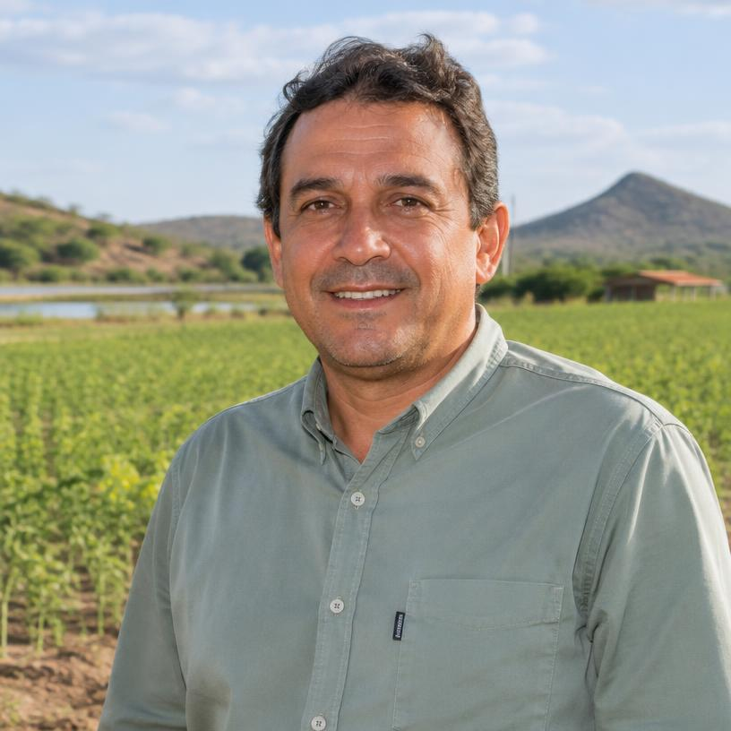
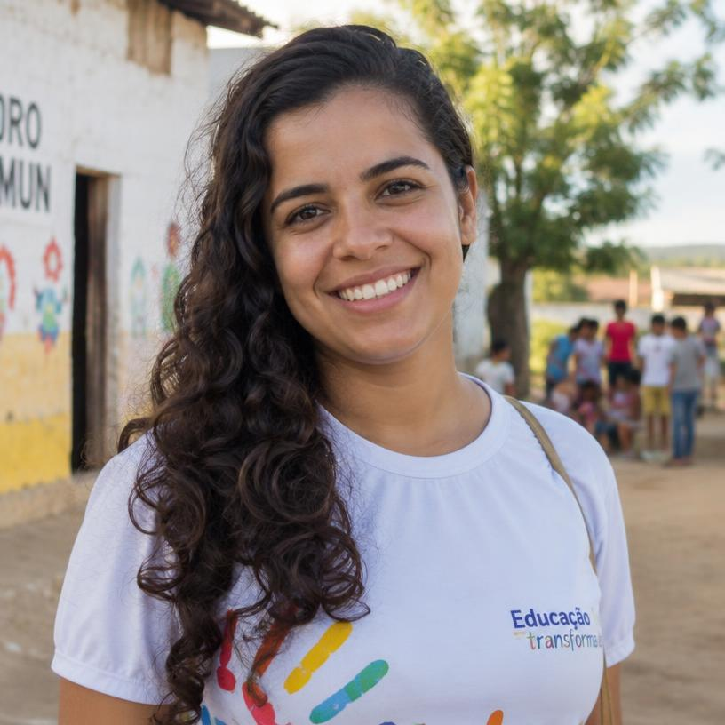
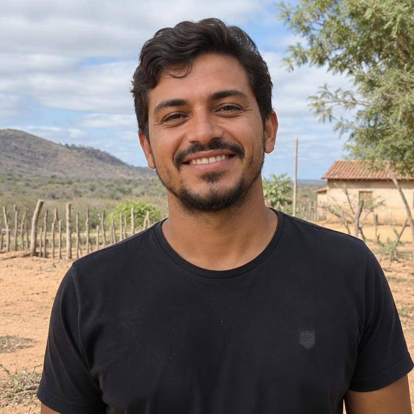
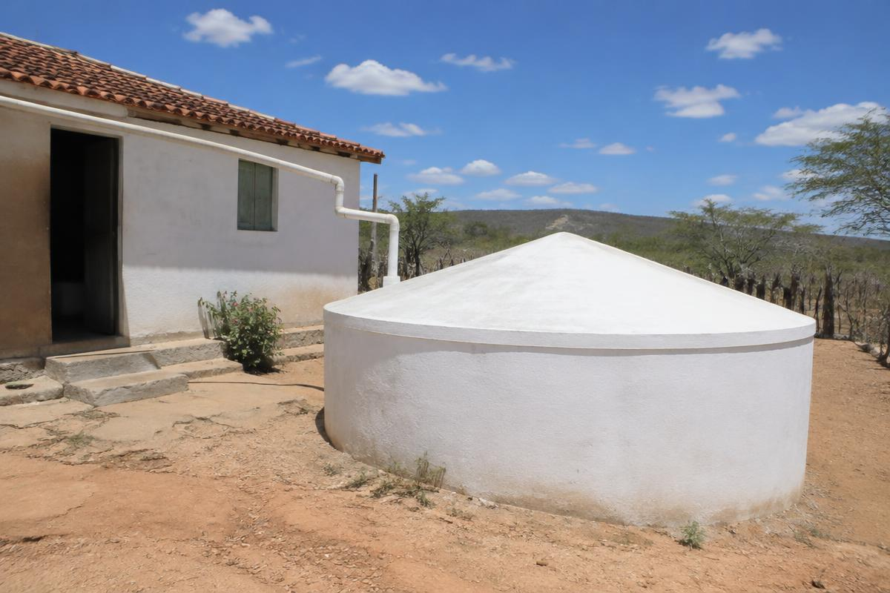
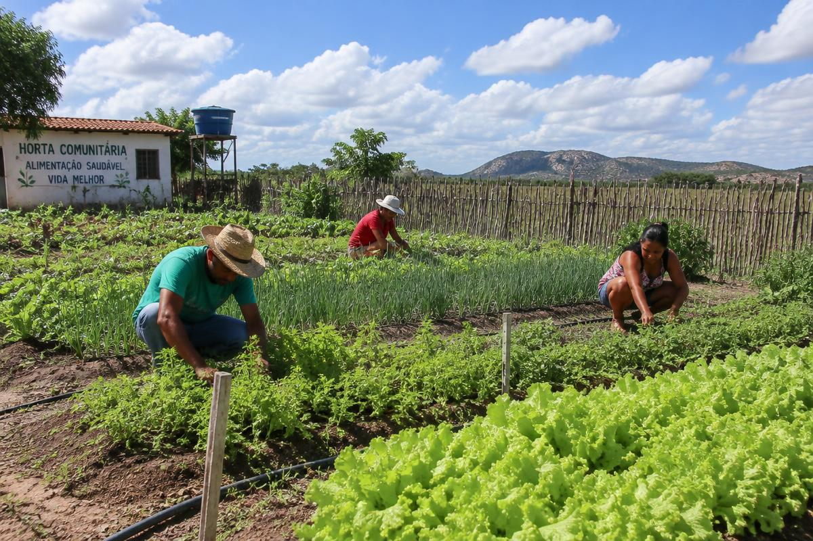
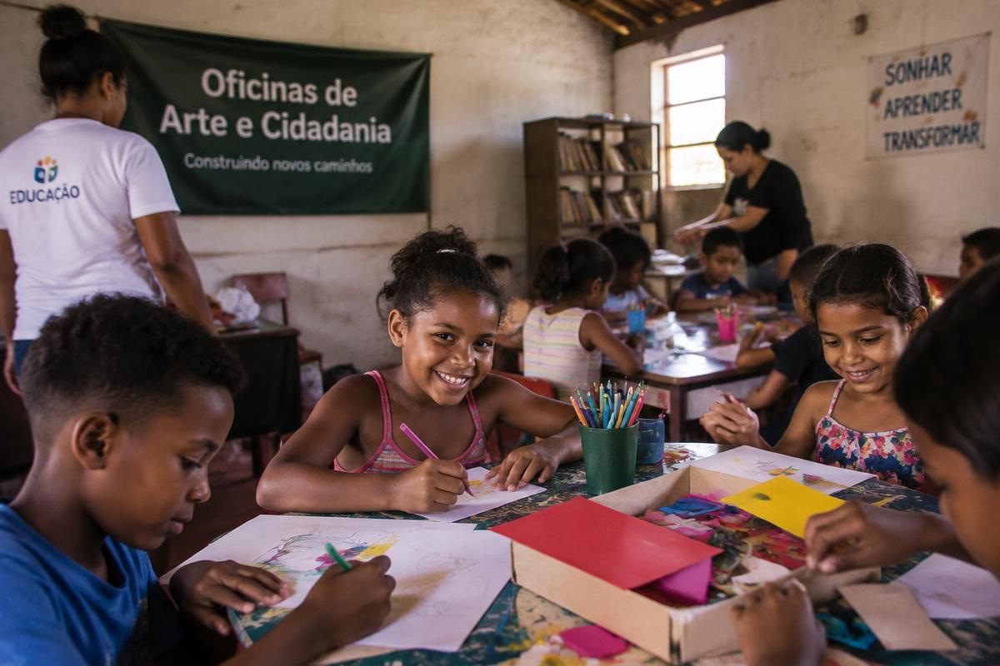
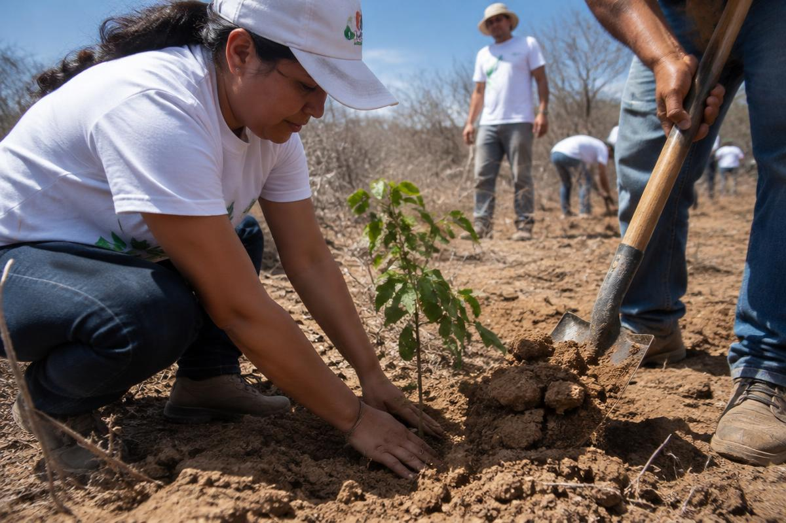
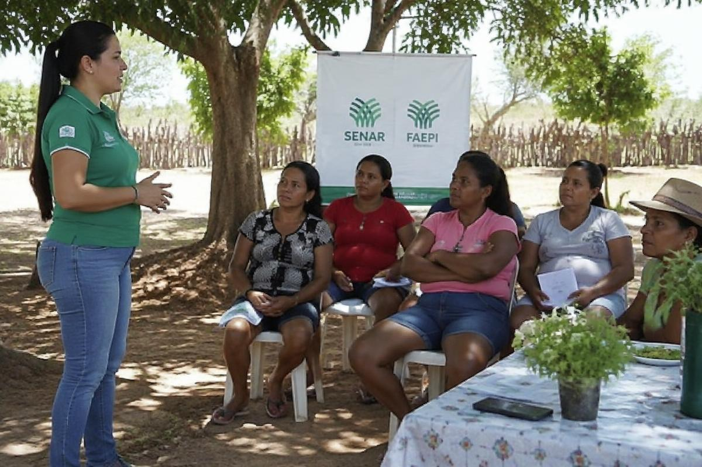
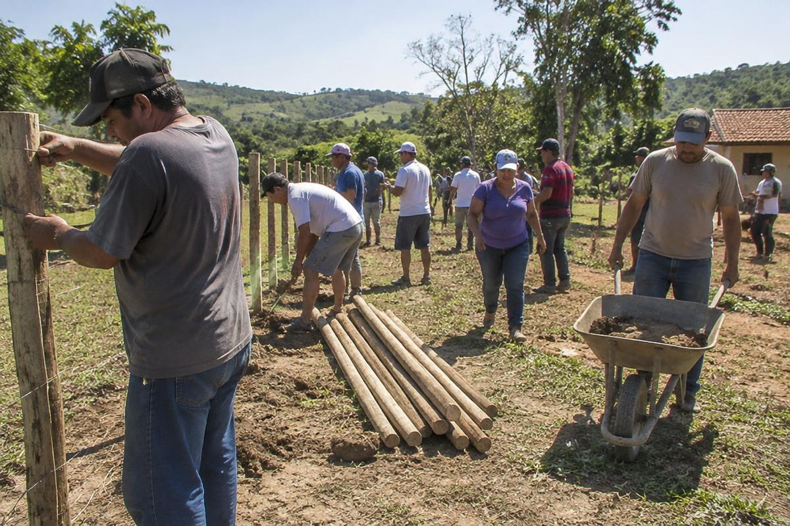

Maria do Carmo
Fundadora
Ajudamos famílias do semiárido da Paraíba a ter acesso à água com a construção de cisternas e hortas comunitárias.
Quero ajudarO Instituto Caminho das Águas é uma ONG fundada em 2014 em Cajazeiras, na Paraíba. Nosso objetivo é ajudar famílias da zona rural que sofrem com a falta de água durante a seca.
Muitas pessoas ainda precisam andar quilômetros para buscar água. Por isso, construímos cisternas que guardam a água da chuva e ajudamos as comunidades a plantar suas próprias hortas.

Fundadora

Mestre de obras

Agrônoma

Educador ambiental






Você pode ajudar o nosso trabalho de várias formas:
Depois de doar, envie o comprovante para o nosso e-mail. Obrigado pela ajuda!
Endereço: Rua Anísio Rolim, 110, Capoeiras, Cajazeiras - PB
E-mail: contato@caminhodasaguas.org
Telefone: (83) 99366-5686